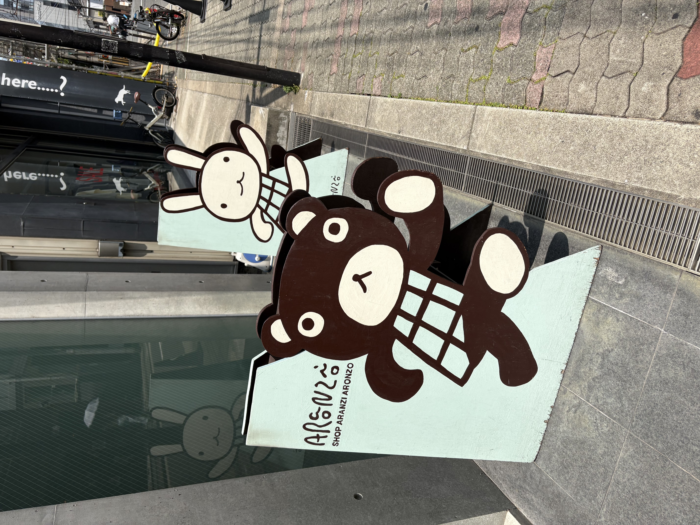
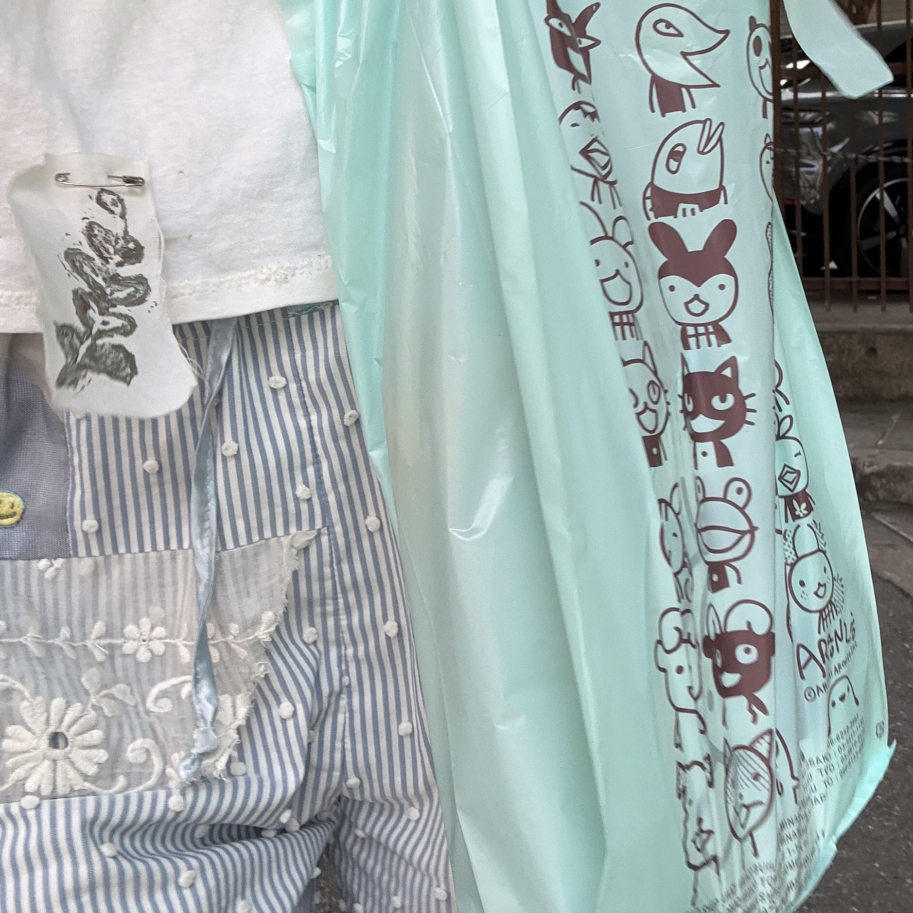

2日目
朝にもお風呂に入ってちゃんとたのしんだ
アランジアロンゾ本店へ行った
みんなは知っているのかな
彼らは最高な精神を持っているよ
持ち物ほとんどアランジアロンゾになってきた
くまとパンダとしろうさが好きです
ねこちゃんたちも好きです


爆買い
パプリカ食堂veganというveganのお店へ
わたしは大豆が相当好きなんだけど、
大豆ミート唐揚げ定食にしたらだいぶ重かった
真夏に揚げ物やめた方がいいのかな
でも超おいしいのでまたいくと思う
ルイボスティーで身体を冷やした
街、灼熱
でっかい火さん企画のグループ展、「⚪︎ to life」のためにopaltimesへ
よかった とってもよかった
前回の"おまえの姿がよくみえる"も相当すごかったけど
今回はなんかとてもでっかい火さんらしかったね
でっかい火さんのドローイングのファイルをめくってたら
なんか涙がでた
はやく会いたいな、と思った
わたしはでっかい火さんの作品が大好きで
あたらしいのも過去のもすごくいいなと思った
来れてよかった
opaltimesを出たらアゲハチョウとぶつかりそうになった
お互いふらふらしててごめん
お水あげたかった
でもアゲハチョウは真夏に元気ないきものだから
心配ないかな、と後ろ姿を見送った
NEW PURE +へ向かう
そのまえにゼー六という喫茶店へ
珈琲とアイス最中が有名のお店
前日に美容師さんに教えていただいた
なんでかわからないけれど
ここでの時間が今回の大阪旅行の中で
いちばん印象的で忘れられなかった
お持ち帰り専用窓みたいなところがあって
多くの人はそこで頼む みんな15個とか頼むの
それを一瞬で最中にアイスを挟んで 袋に入れて新聞紙で包むの
持ち歩き時間が長くなると新聞紙二枚になる
わたしは店内からそれを眺めていた
わたしのほしい夏がまだここにあった、と思った
手土産なのかな、とか3時のおやつなのかな、とか
入ると同時に出て行って方たちは身体の中が冷やされたねって言ってたけど
わたしも食べ終わった頃にはそれになった
冷たいものはあまり取らないけどアイスはだいすきだから
また絶対ここに来ようと思った
大阪で好きなところがふえた
NEW PURE +へ
玉川桜さんと玉川ノンちゃんさんの2人展、
まえに行ったのは9年前！2017年だったよ
海がテーマだったからとてもうれしかった
わたしのなかのたからばこにそっとしまいました
たいせつな展示でした
店主の方がたくさんお話をしてくださった
わたしが大阪でいちばん好きなところは
ニューピュアプラスです、と言ったからなのか
いつもきているeveryone’s motherのearth dayTシャツを見て、
どこのTシャツかと聞かれたから表参道にあるSEASONで買った、と話したからなのか
Susan Chancioloの話を熱く語ってくださった
わたしがこのお店にはじめて訪れた時はいつだったのかはもう忘れてしまったけど、
でもずっと惹かれる理由がなんとなくわかった
なんかみんなつながっているんだ、とおもった
それに気づいたりわかったりするかはそれぞれだと思うけど、
でもわたしはそういうのがわかると安心するしうれしい
それらがわたしにとっての世界中に散らばったカケラ、なんだとおもう
もっとあつめたい 縫い合わせるようにしてわかりたい
なんか大阪にきてよかったな、と思った
大阪はむかしから会いたいひとがいるから会いにいく街で
ずっとずっとそう
その対象は変わってゆくんだけど
それでもやっぱりわたしにとっての大阪はそういう場所なんだ
淀川を越えた 帰る時間だ
この時間がいっつもさびしい
またすぐ来るのにね
台北の迪化街を抜けた先にあった淡水が淀川に似てると思ったけど、
ほんとうに似てたよ
PS：例えば炎の単独当選したから9月末また大阪いくよ
こんどはみんなあそんでね
←